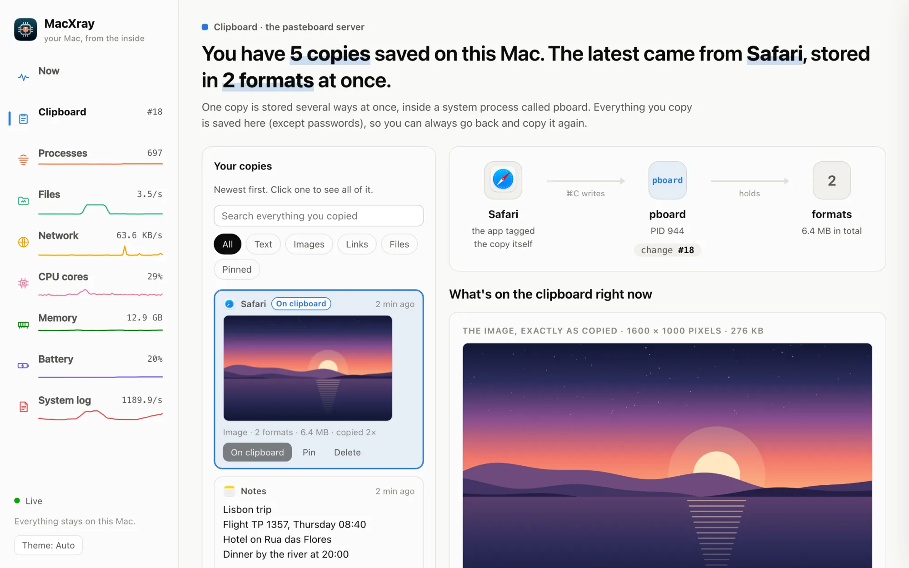
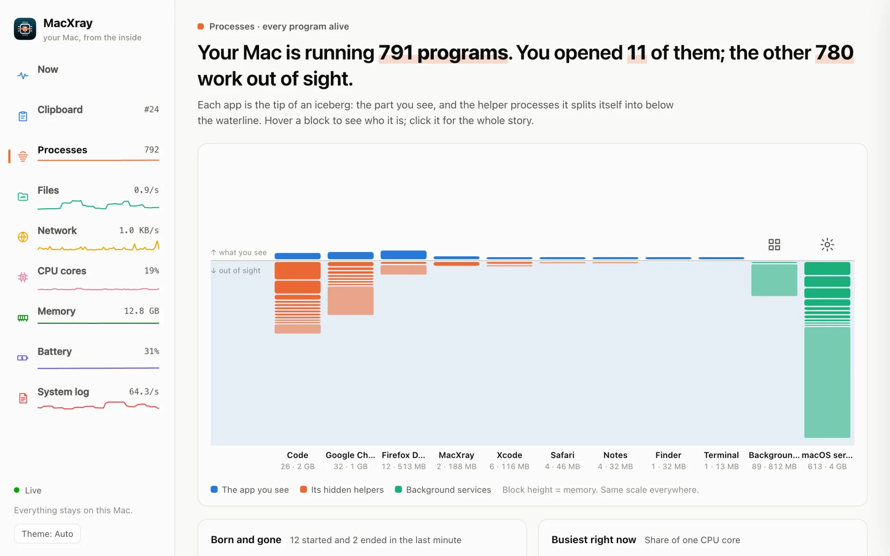
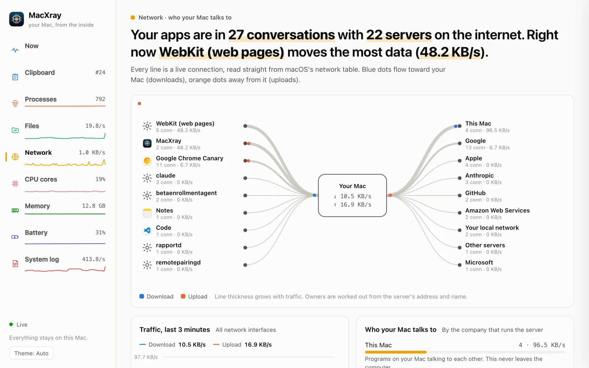
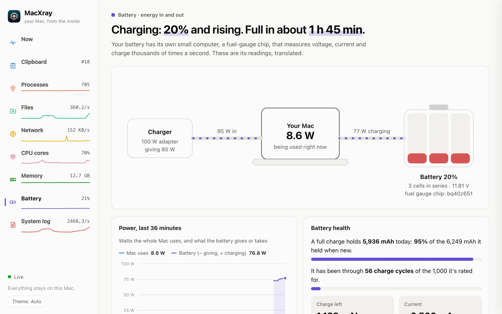

Copy something
Copy some text or a picture anywhere, then open Clipboard. It's there in full, with the app it came from and every format it was stored in. Click an older copy to copy it again.
The file is on its way. Here's what happens the first time you open it.
MacXray is a Mac app. Open this page on your Mac to download it.
If nothing happens in a few seconds, download it here.
Download MacXray.dmgEvery version is also on GitHub.
macOS checks a new app the first time you open it, and asks you to confirm once.

Copy some text or a picture anywhere, then open Clipboard. It's there in full, with the app it came from and every format it was stored in. Click an older copy to copy it again.

Open Processes and click any block below the waterline to learn what that program is and why it's running.

Open Network to see which companies your apps are connected to right now, and click a connection to see whether anyone could read it.

Open Battery for its health, its charge cycles and the cells inside, then plug in your charger and watch the power change direction.